地政学
ヌアクショットはサヘル西端と大西洋を結ぶ首都です。マグレブ、ECOWAS周辺、サハラ交易、西サハラ問題、移民管理、漁業権、鉱物輸出が重なり、海辺の官庁街が広域政治の窓口です。欧州との安全保障協力も暮らしに影響します。
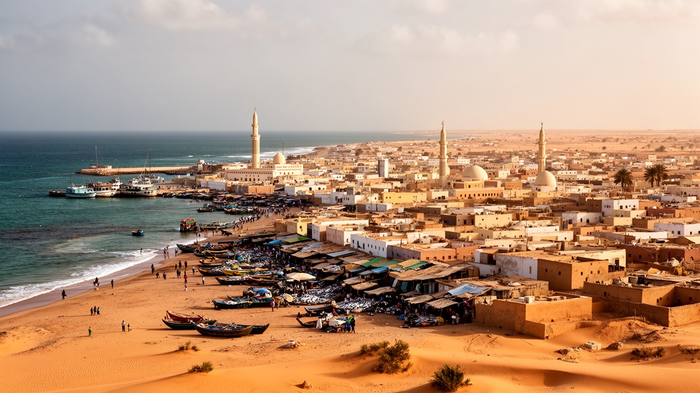
🇲🇷 モーリタニア / 大西洋岸サヘル / World City Atlas
独立直前に小さな海辺の集落から首都へ選ばれ、砂漠化で流入した人々、港湾物流、官庁、魚市場、イスラムの公共生活、低地の住宅課題が一気に重なった都市です。
都市の骨格
ヌアクショットは、砂丘と海岸低地の上に国家機能、港、魚市場、住宅地、モスク、道路網を広げてきました。乾燥、洪水、移住、雇用、宗教が、首都の日常を同時に動かします。
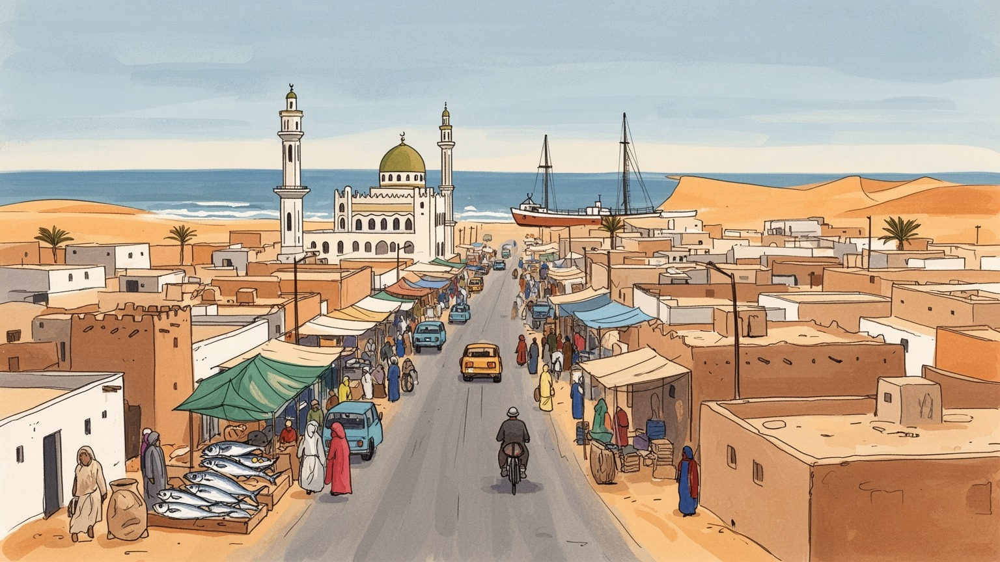
ヌアクショットはサヘル西端と大西洋を結ぶ首都です。マグレブ、ECOWAS周辺、サハラ交易、西サハラ問題、移民管理、漁業権、鉱物輸出が重なり、海辺の官庁街が広域政治の窓口です。欧州との安全保障協力も暮らしに影響します。
行政、港湾、魚市場、建設、交通、通信、小売、鉱業関連の物流が雇用を支えます。正規職は限られ、露店、荷役、修理、運転、家事労働が大きく、若者の技能と収入が課題になります。女性商人の信用と安全も重要です。
イスラムは礼拝、教育、家族儀礼、商いの倫理を通じて都市を支えます。アラビア語、ハッサーニーヤ、プラール、ソニンケ、ウォロフ、フランス語が交わり、遊牧の詩、ラジオの討論、サッカー中継も街に響きます。
旅人は魚市場、海岸、サウジ・モスク、国立博物館、砂丘を訪ねます。住民には水、排水、住宅、電力、交通、砂塵、洪水が日々の課題になり、夕方の海辺は子どもと高齢者を含む家族の休息にもなります。海風も支えです。
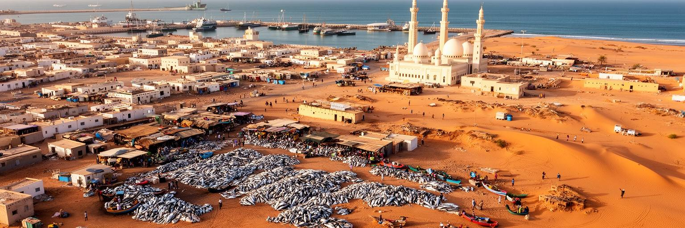
ヌアクショットは、古い大都市が自然に首都へ育った場所ではありません。独立を控えたモーリタニアが、民族や地域の均衡を意識しながら、海に近い小さな集落を新しい国家の中心に選んだ都市です。当初の計画は限られた人口を想定していましたが、干ばつと砂漠化、農牧地の不安定化、行政サービスへの期待が人々を引き寄せ、首都は短期間で巨大化しました。砂丘の間に広がる道路、低層の住宅、官庁、学校、市場は、国家建設と移住の圧力が同時に進んだ結果です。計画都市としての直線的な骨格は残りますが、実際の市街地は家族や部族のつながり、土地取得、非公式な住宅、輸送路に沿って広がりました。サハラの乾燥した空気と大西洋の湿った風がぶつかる環境では、砂塵、塩害、暑さ、低地の浸水が都市管理を難しくします。ヌアクショットを見る時は、首都が完成された計画ではなく、砂漠化に押された社会が急いで住まいと制度を作った場所だと考える必要があります。人口増加の速さは、道路や水道だけでなく、学校、保健、行政窓口、公共空間にも負荷をかけます。それでも人々は、故郷の共同体を持ち込み、商いを始め、礼拝の場を整え、都市を自分たちの生活圏へ変えてきました。未完成さも都市の現実です。砂漠の中の首都という姿は、脆さだけでなく、環境の変化に対応して都市を作り直す力も映しています。
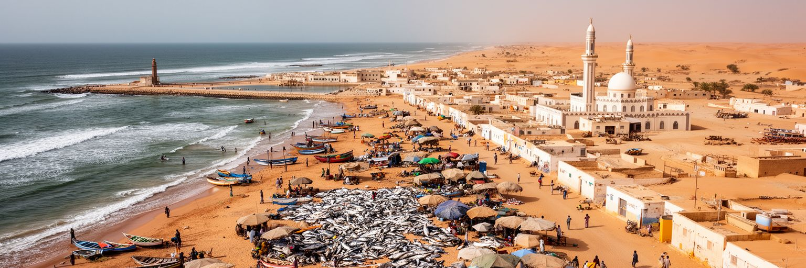
ヌアクショットの港は、モーリタニアの消費生活と国家財政を支える大きな装置です。食料、燃料、建材、機械、車両、医療用品、日用品が海から入り、内陸の鉱業地帯や都市市場へ運ばれます。国土が広く人口密度が低い国では、港に届く貨物の費用と時間が、首都だけでなく地方の物価にも影響します。港湾労働者、通関業者、トラック運転手、倉庫業者、修理工、警備員、屋台の茶売りは、国際物流を日々の収入へ変える人々です。鉄鉱石、金、銅、漁業資源、ガス開発のような輸出産業は、産地が首都から離れていても、金融、行政、輸送、許認可、外国企業との交渉を通じてヌアクショットへ結びつきます。港は便利な入口である一方、渋滞、粉じん、事故、土地利用、労働安全、税関の透明性をめぐる課題も抱えます。輸入に依存する都市では、為替や海運費、燃料価格の変化がすぐ家計へ届きます。米、小麦、砂糖、茶、建材の値段が上がれば、市場の会話、ラジオ番組、SNSの不満にも反映されます。港湾の近代化は、クレーンや岸壁だけの話ではありません。通関の迅速化、道路の整備、倉庫の衛生、夜間照明、労働者の安全、環境対策、税収の公正さがそろって初めて、都市全体の生活を支えます。大西洋に面した港を読むことは、砂漠国家が世界経済と接続し、輸入と輸出のリスクをどう分け合うかを見ることです。
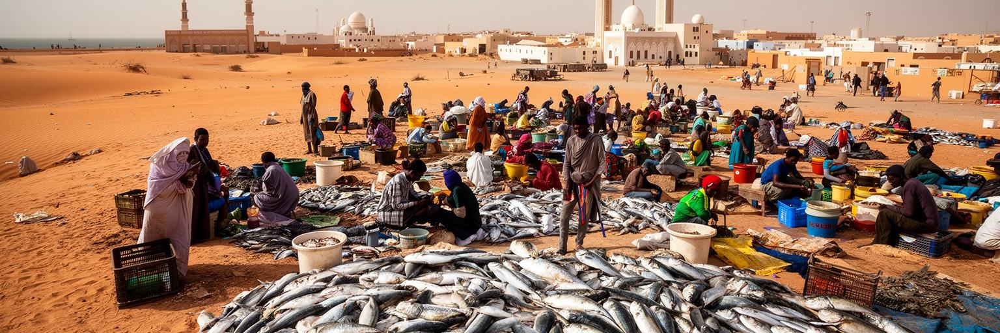
ヌアクショットの魚市場は、首都の中でも特に身体感覚の強い場所です。大西洋から戻る色鮮やかな木造船、浜に並ぶ魚、塩と煙の匂い、荷を運ぶ若者、競りをする商人、氷や箱を扱う労働者、朝食を売る屋台が海岸を動かします。モーリタニア沖は豊かな漁場で、魚介類は国内消費だけでなく輸出や外貨獲得にも関わります。沿岸漁業は、セネガルなど近隣国から来た漁民、地元の商人、加工業、冷蔵物流、レストラン、家庭の食卓を結びます。魚市場は観光客にも印象的ですが、写真向きの風景だけではありません。漁業権、資源管理、外国船団、燃料費、海難、冷蔵設備、衛生、海岸侵食、若者の雇用が重なります。魚が豊富でも、貧しい家庭に十分な栄養として届くには、価格、流通、保存、調理の条件が必要です。市場で働く女性は販売や加工で家計を支えますが、作業環境や信用へのアクセスでは不利を抱えることもあります。海岸の労働は天候に左右され、砂と塩は道具や建物を傷めます。行政が市場を整備する時には、衛生基準や観光化だけでなく、既存の労働者が排除されない仕組みが求められます。魚市場を歩くと、ヌアクショットが砂漠の首都であるだけでなく、焼き魚、茶、家族の夕食、輸出の箱を通じて海から生計を得る都市でもあることが分かります。波打ち際の混雑は、都市経済の生きた入口です。
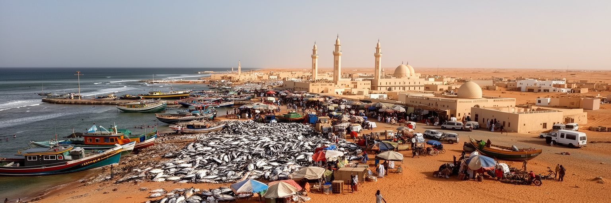
ヌアクショットは、モーリタニアの大統領府、議会、省庁、裁判所、外交団、国際機関、報道が集まる政治の中心です。国土はサハラとサヘルに大きく広がり、人口は海岸、オアシス、河川沿い、鉱山都市、遊牧地域に分散しています。そのため首都の政策は、道路、水資源、教育、保健、治安、国境管理、鉱物収入の分配を通じて、非常に広い空間へ影響します。モーリタニアはマグレブ、サヘル、西アフリカ、大西洋の間に位置し、アラブ世界とサブサハラ・アフリカをつなぐ外交上の意味も持ちます。西サハラ問題、マリ情勢、越境する武装勢力、移民の移動、漁業協定、鉱業投資、欧州との関係は、官庁街の会議だけでなく市民生活にも影響します。治安政策が強まれば国境地域や都市の移動に響き、援助や投資が増えれば道路や港、行政改革の優先順位が変わります。首都への集中は意思決定を一カ所にまとめる利点を持ちますが、地方から見れば声が届きにくいという不満も生みます。政治はアラビア語やフランス語の公式文書だけでなく、モスク、市場、ラジオ、テレビ討論、SNS、家族の会話にも広がります。若い市民は、選挙や外交の言葉を、仕事、水、家賃、教育、交通の改善として測ります。ヌアクショットの政治を読むには、砂漠国家の統合と、地域社会の多様な声をどう結びつけるかを見る必要があります。官庁街は国境の遠い問題を引き受ける場所でもあります。
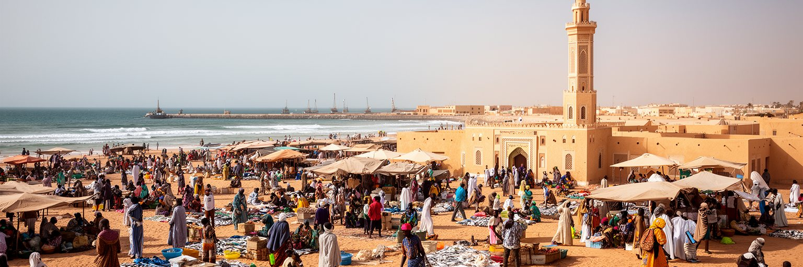
ヌアクショットの日常では、イスラムが都市の時間、倫理、教育、家族関係、商いを深く形づくっています。礼拝の呼びかけは街のリズムを作り、金曜の集団礼拝は宗教の時間であると同時に、社会のつながりを確認する場になります。モスク、クルアーン学校、宗教学者、家族の儀礼、慈善、断食月の生活は、行政や市場とは別の社会的な基盤を持ちます。ラマダンの夜には食卓、茶、甘い菓子、親族訪問、街角の買い物が増え、子どもも祭りの空気を覚えます。サウジ・モスクのような大きな礼拝空間は首都の象徴ですが、住宅地の小さなモスクも近隣の安全網として重要です。信仰は人々に規律や助け合いを与える一方、若者文化、女性の教育と雇用、政治的な主張、少数派の位置づけをめぐって議論も生みます。都市が大きくなるほど、出身地や言語、階層の異なる人々が同じ公共空間を使うため、宗教的な共通性は結束の力になります。しかし、それだけで社会の不平等が解消されるわけではありません。貧困地区の子どもが学校を続けられるか、女性商人が安全に働けるか、若者が過激な言説ではなく実際の仕事に希望を持てるかは、信仰と公共政策の両方に関わります。宗教行事は、食料支援、親族訪問、結婚、葬儀、寄付を通じて経済も動かします。ヌアクショットを読む時、モスクを観光的な建物として見るだけでは足りません。祈りの場は、都市の道徳、教育、相互扶助、政治的な会話が重なる社会の装置でもあります。
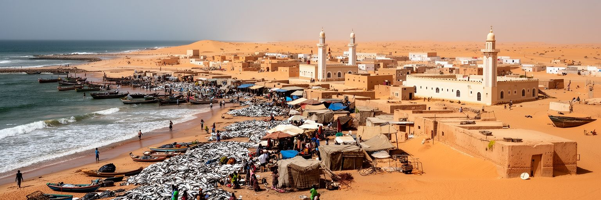
ヌアクショットは、アラビア語とハッサーニーヤを中心にしながら、プラール、ソニンケ、ウォロフ、フランス語、周辺国から来た人々の言葉が交わる都市です。官庁や学校、外交の場では公式の言語が重要になりますが、市場、家族、タクシー、職場では、相手の出身や世代に応じて言葉が切り替わります。この多言語性は文化的な彩りにとどまらず、仕事、教育、行政サービスへのアクセスを左右します。フランス語や標準アラビア語に近い人は制度に入りやすく、地域語や口語だけで暮らす人は手続きや就職で不利になることがあります。首都には遊牧や半遊牧の記憶も強く残ります。テント、茶を囲む作法、親族ネットワーク、砂漠の詩、婚礼の歌、家畜や移動への感覚は、コンクリートの住宅地に移っても完全には消えません。干ばつで都市へ来た世代にとって、ヌアクショットは安全な避難先であると同時に、失われた牧地や移動生活を思い出す場所でもあります。若い世代はスマートフォン、学校、ポップ音楽、サッカー動画、海外移住の情報に触れながら、家族の規範や宗教的な期待とも向き合います。言語と記憶の重なりは、都市を一つの国民文化だけで説明できないことを示します。市場で交わされる挨拶、家庭で出される苦い茶、婚礼の太鼓、学校の教室、ラジオの討論を合わせて見ると、ヌアクショットは砂漠の過去と都市の未来が会話する場所として見えてきます。
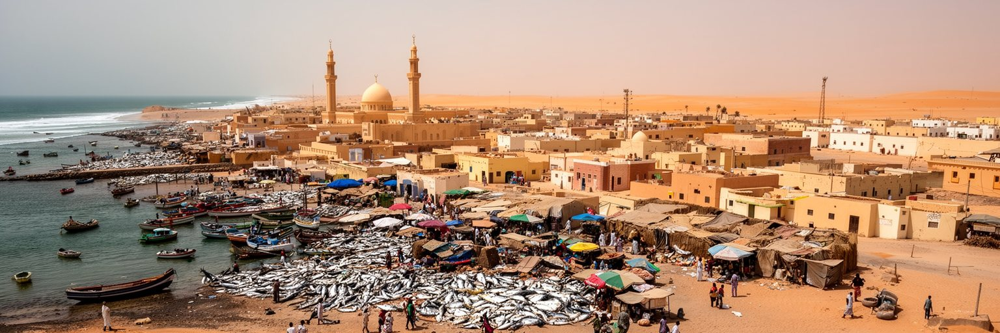
ヌアクショットの日常を最も強く左右するのは、住宅、水、排水、電力、道路、ごみ収集、学校、診療所です。都市が急速に拡大したため、計画的な区画、非公式な住宅、郊外の新興地区、古い中心部が混在しています。砂地の道は移動を難しくし、雨が少ない都市でありながら、強い雨が降ると低地では水が引きにくくなります。給水の不安定さは、家庭の支出と時間を増やし、特に女性、子ども、高齢者の負担になります。電力が不安定な地域では、夜の学習、店舗の冷蔵、携帯電話の充電、医療機器の利用が制約されます。家賃の上昇や土地権利の不明確さは、低所得層をより遠い地区や危険な場所へ押し出します。行政が道路や公共施設を整える時、立ち退きだけを急ぐと、住民の仕事場、学校への道、近隣の相互扶助を壊してしまいます。反対に、住民組織と協議しながら、排水路、給水点、公共交通、学校、保健、女性の安全、商いの場所を整えれば、都市サービスは信頼を作ります。ヌアクショットの住宅問題は、貧しい地区を単に改善対象として見る話ではありません。砂漠化や地方の不安定さで首都へ来た人々を、都市の正式な住民としてどう扱うかという政治の問題です。日陰、街灯、夜に開く小店、子どもが遊ぶ空き地も生活基盤です。暮らしやすい首都は、中心部の官庁の整然さではなく、郊外の路地で水が手に入り、子どもが安全に学校へ行けるかで測られます。
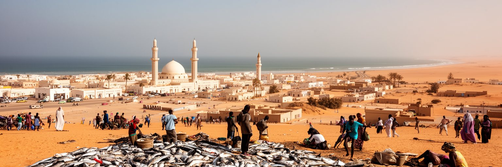
ヌアクショットは砂漠気候の都市ですが、水の問題から自由ではありません。年降水量は少ない一方、短時間の強い雨が低地にたまると、道路、住宅、排水、衛生に大きな影響が出ます。市街地の一部は海岸に近い低い地形にあり、地下水位、塩分、海岸侵食、排水能力の不足が複雑に絡みます。砂丘の移動や砂塵は道路や建物を埋め、海風は塩害をもたらします。気候変動は、干ばつで地方の生活を不安定にし、首都への移住圧力を強める一方、沿岸都市としての浸水リスクも高めます。水の確保は、井戸、導水、貯水、配水管、料金、漏水管理、貧困地区への供給を含む社会政策です。水を買う費用が高ければ、低所得世帯の食費や教育費が削られます。排水路にごみが詰まれば、少ない雨でも衛生危機になります。気候対策は、大きな護岸や導水事業だけでは足りません。土地利用の規制、湿地や低地の管理、砂丘の固定、公共交通、早期警戒、学校や診療所の安全、住民への情報共有が必要です。特に海岸部や非公式住宅地では、住民の生計を無視した移転策は反発を生みます。井戸水の塩分管理も課題です。水質検査も欠かせません。ヌアクショットの環境を読む時は、乾燥と洪水を別々に考えないことが重要です。水が足りない都市で、同時に水があふれる危険があるという矛盾が、首都の計画を難しくしています。
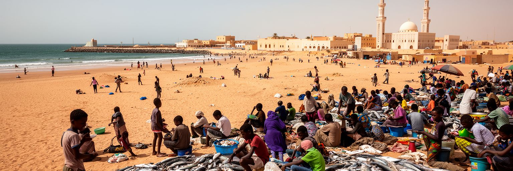
ヌアクショットの経済は、官庁や港だけでなく、市場、露店、修理、交通、家事労働、小規模な建設、携帯電話関連サービスによって日々動いています。若い人口が多い都市では、学校を出た後に安定した仕事へつながる道が十分でないことが大きな課題になります。多くの人は、親族の店を手伝い、路上で商品を売り、タクシーや三輪車、荷運び、建設現場、清掃、警備、飲食で収入を得ます。夕方にはサッカーの試合、音楽の流れる店、携帯の動画、茶の屋台が若者の居場所にもなります。こうした仕事は都市を支えますが、収入は不安定で、病気、事故、警察との交渉、燃料価格、季節の変化に弱いです。女性商人は家庭の支出を支える重要な存在ですが、保育、移動、安全、信用へのアクセスで制約を受けることがあります。若者に必要なのは、短い研修の証明書だけではありません。読み書き、会計、修理、冷蔵物流、食品衛生、港湾作業、デジタル決済、言語能力、起業を支える小口金融が、実際の収入へ結びつく形で求められます。市場整備では、歩道や衛生、交通を改善しながら、既存の商人を追い出さない設計が必要です。透明な料金、保管場所、日陰、水、トイレ、安全な乗降場所を整えれば、小商いは雇用と税収の基盤になります。ヌアクショットの若者を読むことは、砂漠国家の将来が、首都の路上でどれだけ現実的な機会を作れるかを見ることです。
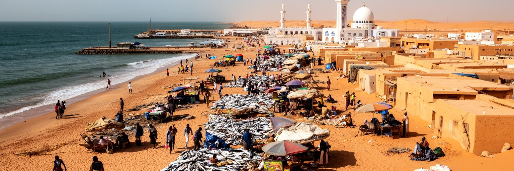
ヌアクショット観光は、巨大な歴史遺産を巡る旅というより、サヘルの現代首都を短い距離で読む旅に向いています。魚市場では海岸の労働と食文化に触れ、サウジ・モスクや周辺の礼拝空間ではイスラム社会の公共性を感じ、国立博物館ではサハラ交易、考古、遊牧文化、国家形成の記憶に出会えます。海岸の夕景や砂丘は美しいですが、都市の魅力は風景だけではありません。市場の茶、焼き魚の匂い、道路沿いの小商い、言語の切り替わり、白い建物と砂の色、港へ向かうトラック、夜の涼しさを待つ家族連れの海辺が、ヌアクショットらしさを作ります。観光が持続するには、安全、交通、衛生、案内、文化財保全、地域への収入還元が欠かせません。訪問者が魚市場をただ珍しい風景として消費すると、労働者の生活や資源管理の課題は見えにくくなります。反対に、地元の案内人から話を聞き、写真の取り方に配慮し、市場で食べ、博物館で背景を学び、海岸環境にも目を向ければ、旅は都市理解になります。ホテル、運転手、ガイド、飲食、手工芸、通信は観光から仕事を得ますが、国際報道や治安情報に左右されやすいです。だからこそ国内観光や学校の見学とも結びつけ、都市の記憶を住民自身が語れる仕組みが大切です。ヌアクショットを歩く楽しさは、砂漠と海、信仰と市場、計画と即興が同じ日常にあることを確かめる点にあります。
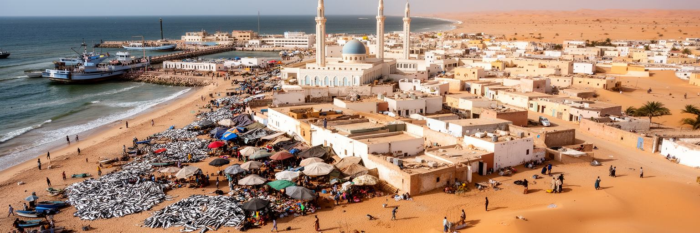
ヌアクショットは、世界経済の中心都市ではありません。それでも世界の都市を考えるうえで重要なのは、この首都が砂漠化、急速な都市化、海への依存、イスラム社会、多言語国家、若者の雇用、気候リスクを一つの場所に集めているからです。独立直前の計画首都は、干ばつに押された移住者を受け入れ、港と官庁を軸に成長し、魚市場と路上経済で日々の生活を支えてきました。ここでは、国家の象徴と砂地の路地、外交会議と給水の不安、海岸の観光と漁業資源、宗教的な結束と社会階層が近い距離にあります。都市を貧困や砂漠のイメージだけで固定すると、住民が築いてきた商い、信仰、教育、家族のネットワーク、若者の工夫は見えなくなります。一方で、急成長の負担を美化することもできません。住宅不足、排水、雇用、水、物価、海岸侵食は、首都の未来を具体的に制約しています。ヌアクショットを読む時は、砂漠と海の境界にある地理を出発点にしながら、人々がどのように都市を正式な制度へ押し上げているかを見る必要があります。港の貨物、魚市場の声、モスクの礼拝、郊外の給水、砂塵の道、ラジオから流れる音楽を同じ地図に置くと、モーリタニアの現在が見えてきます。そこに首都の密度があります。規模の大きさではなく、環境変化と国家建設が日常生活に近く現れることに、この都市を読む価値があります。